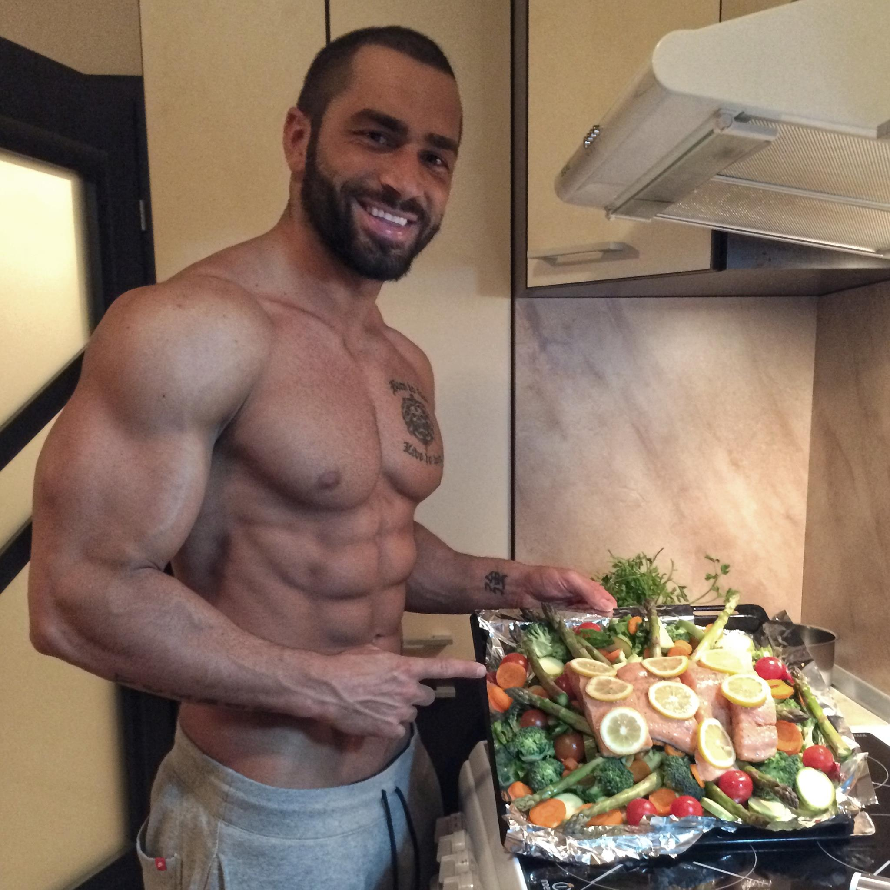

Healthy food blogs and Instagram-worthy recipes inspire home
cooks everywhere to prepare their own delicious and nutritious
meals at home. But it's not just stunning food photography that
amasses a following. Many people rely on healthy food bloggers
for their innovative recipes, mindful eating strategies,
nutrition tips, and kitchen hacks to improve their cooking
skills and support their overall wellness. With so many food
blogs to choose from, it can be overwhelming to narrow it down.
That's why we curated this list of healthy food blogs featuring
some of the industry's most talented influencers and nutrition
experts. You'll find that many of these blogs are run by
registered dietitians and feature credible, evidence-based
nutrition and health information to educate, inform, and inspire
their followers.
Annemarie Rossi, a self-described “regular mom," started a blog
to offer simple, healthy, and affordable alternatives to
processed foods. Real Food Real Deals follows a four-point
checklist for each recipe—real (avoids overly processed
ingredients), easy (30 minutes or less), affordable (recipes
include the cost breakdown), and flavor (because if it doesn’t
taste good, who’s going to eat it?). Real Food Real Deals takes
traditional favorites and adds a nutritious twist, like avocado
deviled eggs or carrot and zucchini fritters. Rossi is also the
author of the 2014 cookbook, "Conquering Your Kitchen: How to
Plan Meals, Shop, and Cook Real Food with Confidence and
Purpose!" The guide features 80 healthy recipes that follow
Rossi's four key tenets for cooking.
